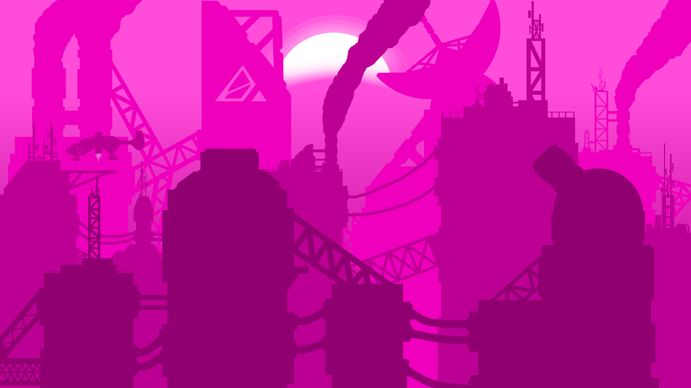

J'adore les jeux vidéos, en particulier les open-world (exploration de monde ouvert), les sandbox (bac à sable) et les FPS (jeux de tir à la 1ère personne).
J'y joue souvent et cela me permet d'entrainer ma réactivité, ma créativité et ma compréhension de différents univers.
J'aime énormément l'univers et les graphismes de l'Open-world Genshin Impact.
Je suis aussi friand des jeux sandbox, en particulier Roblox et Minecraft.
Car ils proposent une grande variété de modes de jeux
J'aime beaucoup le pouvoir de créer.
J'éprouve un sentiment d'accomplissement lorsque je regarde le résultat final de mes productions.
C'est gratifiant de voir tous mes efforts d'apprentissages récompensés,
et c'est pour cela que j'écris, je dessine, je programme, je construis et je modélise.

Je suis un très grand fan de culture japonaise car son style graphique est unique.
Je possède plus d'une centaine de mangas et je regarde beaucoup d'animes (séries et dessins animés japonais).
Et voici une partie de ma collection :

La culture japonaise m'a aussi fait découvrir l'univers des conventions. Ce sont des événements où des fans de culture japonaise se rassemblent.
Certains se déguisent et tout le monde s'amuse.
Comme j'aime créer, les Legos sont un moyen parfait pour exprimer les idées que j'ai en tête et leur donner vie.